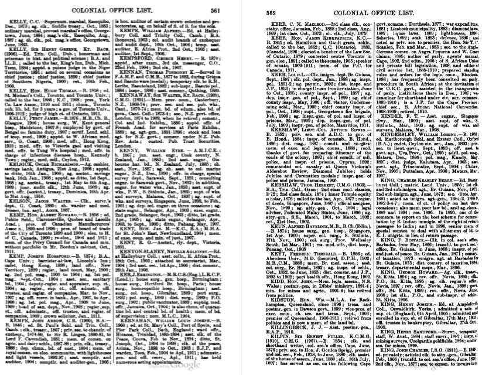
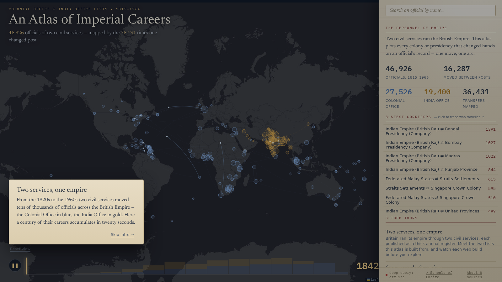

1968The historian of tomorrow will be a programmer, or he will not exist.Emmanuel Le Roy Ladurie, French historian of climate and peasants
1974–76Time on the Cross applies econometrics to American slavery. Historians and economists contest its numbers and its inferences.Fogel & Engerman; Reckoning with Slavery, 1976
1979Stone detects a “revival of narrative”, a reaction against social-science history.Lawrence Stone, Past & Present 85
2016Digital history is stuck in a “perpetual future tense”, always describing what it could do.Cameron Blevins, Debates in the Digital Humanities
Both fields had the machines from the start. Physics made computation part of its method; in history it stayed a minority practice.
What arrives at Historical Methods now
I co-edit Historical Methods, a journal for quantitative and digital history. The cost of writing has collapsed, and it shows in what arrives.
Slop A fluent, generated paper with no research behind it.
Semi-slop A real question or real data, with analysis and prose that nobody has checked.
[TBD: Jim, one concrete, anonymised example, or a count you can share, e.g. submissions per year then and now, or the share desk-rejected.]
Science met this first
More than 10,000 retraction notices in 2023, a record; over 8,000 from Hindawi journals, much of it attributed to paper mills.
Van Noorden, Nature 624 (2023): 479–481
Writing got cheap; readers did not multiply
What it costs to produce
Codeweeks of broken code an afternoon
Prosemonths of drafting minutes for a fluent draft
↓ collapsed
What it costs to use
Readersthe same number, with the same hours
Reviewa referee still reads every page and checks every source
→ unchanged
There is no market for a ton more written history. The speed is only worth having if it buys better work.
What does better look like? Two examples, then the evidence from one large project.
What’s coming
Jessica Jack
What became possible
From no command line to interactive maps of Saskatchewan’s railway towns. The speed spent on asking new questions.
Jacob Polay
From GraphRAG to agentic search
The speed spent on finding and ranking sources, so that a person reads the right ones.
Jim Clifford
Better, not more
One large project, and what separates research from slop.
Jessica [TBD: surname]Getting started, and visualization as method
Where I started
[TBD: the project and its research question. Had never used a command line.]
How fast
[TBD, animated timeline: never used a command line → interactive visualizations on GitHub in under a month → what was reached in under six months? Confirm both milestones.]
What is skills flattening?
Skills flattening The gap between knowing a computer could do a task and being able to make it do it has narrowed. You are no longer gated by other people’s capacity.
[TBD: your example.]
The old way: days per map
[TBD: specific software dictated the output (ArcGIS for mapping, for example). Each version took days, so you made few versions.]
The new way: minutes per map
[TBD, animated loop: ask → build → look → notice a problem → change → rebuild, with a clock reading days → minutes.]
Visualization as method
[TBD: one case where a visualization showed something unexpected, including a problem in the data. Before and after screenshots.]
One visualization, four versions
[TBD, animated: successive versions, each annotated with what prompted the change. Screenshots or a live link.]
Testing at scale, as a grad student
[TBD: problems and outcomes can now be tested at a scale that used to need a funded team.]
Try it, then bring it to the team
[TBD: something you tried alone and then workshopped with the group, and what came of it.]
What still needed judgement
[TBD: where a person had to decide, check, or say no.]
Jacob PolaySearching large document collections: knowledge graphs, GraphRAG and agentic search
1The problem: too much text to read
2Knowledge graphs and GraphRAG: what I built and measured
3Agents: what worked, and why
4Which approach fits which collection size
Nobody can read everything in a large collection
1 Problem2 Graphs3 Agents4 Scale
20,646documents in my corpus, 1614 to 1810
~2 millionpages
1.22 billionwords after OCR
One place, four spellings: Barbados, Barbadoes, Barbedos, Barbadoss. Keyword search finds only the one you type.
A test question: when did Jamaica’s sugar exports first overtake Barbados’s in the customs records? Of 8 retrieval systems I built, 1 answered it correctly.
For scale: 3,169 works affiliated with the Canadian Light Source in OpenAlex; ~315 million works in OpenAlex overall.
Nearest in meaning is not the same as relevant
1 Problem2 Graphs3 Agents4 Scale
Standard retrieval (RAG): chunk the documents, embed them, return the top k chunks by cosine similarity.
In my test (1.46 million chunks):
Averaged 13.0 / 25, second-lowest of 8 systems
Customs records rarely ranked highest by similarity, so it could not answer any quantitative question
Long narrative books can outrank the short letters and tables that hold the facts
Schematic, not real data.
Close in meaning. Not necessarily the answer.
My pipeline: 2 million pages to a searchable graph
1 Problem2 Graphs3 Agents4 Scale
Page images20,646 documents, ~2M pages
→
olmOCR-2open model; word error rate 0.075 on my test set
What is NER?Named entity recognition: a model that tags names of people, places, goods and organisations in text, so they can become nodes in a graph.
Everything runs on open models
OCR: one NVIDIA 5070 Ti (~24 s per page), or 50,000 documents in under 48 hours on the Digital Research Alliance’s Nibi cluster
Existing entity taggers failed on early modern text, so I trained one
1 Problem2 Graphs3 Agents4 Scale
Strict F1 on a hand-annotated 100-page gold standard; 15 models tested, 6 shown.
EarlyModernNER vs Gemini 3 Pro:
Slot error rate 0.331 vs 0.672
0 entities given the wrong type
26.7 s per document vs 34.4 s
6.5 GB peak GPU memory: runs locally, no API fee (Gemini: $8.88 per 100 documents)
A knowledge graph stores entities and typed relationships
1 Problem2 Graphs3 Agents4 Scale
What is a knowledge graph? Entities are nodes; relationships are typed edges between them. Unlike a vector index, it can count, filter and join.
Barbadoes · Barbedos · Barbadossspelling variants found by NER
→
Barbadosone node, after disambiguation
muscovado · brown sugar · molassesvariant products
→
sugarlinked by IS_VARIANT_OF
→
Customs records43,000 rows of imports, 1696 to 1755
218,000nodes
692,000edges
1.74 milliontext chunks linked to the entities they mention (rebuilt graph)
GraphRAG: the graph decides which documents to read
1 Problem2 Graphs3 Agents4 Scale
What is GraphRAG?Retrieval-augmented generation (RAG) fetches text and gives it to a language model before it answers. GraphRAG uses a knowledge graph to choose which documents to fetch, then searches within them.
Question
→
Seed entitiesmatched against 250,000 entity snippets
→
Graph traversalevery document that mentions them
→
Vector searchtop 2 chunks per document
→
Language modelanswers from the top 20 chunks
Better documents than plain RAG. But the model still only sees fragments.
Results: 8 retrieval systems, 30 questions
1 Problem2 Graphs3 Agents4 Scale
Method: 30 questions in 5 difficulty tiers; I graded each answer on 5 criteria, up to 5 points each. Questions 1–17 were not strictly blind (a labelling bug kept each system on the same letter); Improved Scratchpad was scored on 23 questions. One grader, one corpus: read as a pilot, not a benchmark.
Why graph-directed retrieval plateaued near 15.7
1 Problem2 Graphs3 Agents4 Scale
Extraction errors
Noisy graph
Incomplete merging of entities by the language model left duplicates and false links.
Coarse edges
Document, not passage
The graph knew which document mentioned an entity, not where in it.
Fragments
Never a whole document
The model read 20 chunks, without the text around them.
Synthesis
Misread evidence
Answers blended contradictory sources and hallucinated material.
Better retrieval did not fix how the model read the evidence.
What worked: an agent that takes notes on each source
1 Problem2 Graphs3 Agents4 Scale
What is an agent? A language model that calls tools (search, a file reader, a database) and decides its next step from what it finds.
Split the questioninto sub-questions
→
Retrieve 35 diverse chunkspenalise near-duplicates
→
Read the neighbours"turn the page"
→
One note per sourcefacts, quotes, relevance
Query the graphagent writes a database query when numbers are needed
→
Flag conflictsbetween sources
→
Answerfrom the notes, in date order
→
Verifyflags claims with no note behind them
17.90 / 25mean score; next best 16.06
63 of 70head-to-head wins
~10 vs 4.2unique documents per question vs other systems
593 sper question, 22.9 model calls: the cost
The larger model asked the graph a narrower question
1 Problem2 Graphs3 Agents4 Scale
How much ginger did the British Caribbean colonies export between 1696 and 1755, and how did volumes change over time?
Claude Opus 4.7 (frontier model, via API) Wrote a more restrictive database query. Got back 1697 to 1714 only, and reported that the record stops there. Incorrect: the graph holds 1696 to 1755.
Qwen3.6-35B-A3B (open model, run locally) Retrieved the full record: a peak of 1,639 tons in 1735, then a fall of over 90% to 79.9 tons in 1744. Correct, and checked against the graph.
Retrieval and synthesis are separate steps, so we could see exactly which step failed.
For thousands of documents, well-organised text is enough
1 Problem2 Graphs3 Agents4 Scale
What an agent needs:
Folders with meaningful names
Plain text or Markdown with consistent headings
A few lines of metadata at the top of each file: date, author, instrument
Filenames a person could guess
What is semi-structured text? Ordinary documents with a predictable shape: headings, labelled fields, consistent names. Not a database.
Examples: a facility’s manuals, procedures and logbooks.
No index, no graph: the agent searches, opens files and reads around what it finds. Good documentation practice is now good practice for AI search.
MCP and Linked Open Data connect an agent to data that already exists
1 Problem2 Graphs3 Agents4 Scale
What is MCP? The Model Context Protocol: an open standard for connecting a language model to tools and data. A connector written once works with any assistant that supports it. Released by Anthropic in late 2024; governed by the Linux Foundation since December 2025.
What is Linked Open Data? Open data in which every person, place, institution or paper has a persistent identifier. Datasets that share identifiers can be joined, even if they were built separately (Wikidata, OpenAlex, ORCID, ROR, DOIs).
Your files
A document archive
OpenAlexresearch papers
Wikidatapeople, places, things
A knowledge graphone tool among several
↕ one agent reaches all of these through MCP
The Canadian Light Source is ROR 001bvc968 and OpenAlex I83308685: any dataset using those identifiers joins to its 3,169 works.
Demo: an agent searching CLS’s own papers
1 Problem2 Graphs3 Agents4 Scale
Question[TBD: one question about CLS research]
→
Agentsearches through an OpenAlex MCP connector
→
OpenAlex3,169 CLS-affiliated works
→
Answerwith DOIs the room can check
[TBD: run the demo once, save the transcript and a screen recording as the fallback, and link both here.]
Which approach fits which collection size
1 Problem2 Graphs3 Agents4 Scale
Hundreds to thousands of documents
Agentic search
Over well-organised text. No index.
A facility’s manuals and logbooks
Hundreds of thousands to millions
An index the agent calls
Graph and vector indexes, reached as tools. Worth the build cost here.
My 1.74 million chunks
Hundreds of millions
Linked Open Data
Connect to what exists through MCP. Do not rebuild it.
The literature: ~315 million works
The software finds and ranks. People read and judge.
Jim CliffordBetter, not more
Where the work went
Jessicaa question → a map → a better question
→
The historian's judgementreading, checking, deciding what counts
←
Jacoba corpus → a search → ranked sources
The analytical work migrated from programming to history.
Jessica Jack, “What Became Possible”, Working Papers in Critical Search 003 (2026)
The agent writes the code. What's left is the part that was always the discipline.
Imperial Careers: 85 volumes, read in full

Colonial Office List, 1913, pp. 561–562: about forty careers on two pages
→

The Imperial Careers atlas: arcs join an official's recorded postings, in order
85volumes OCR'd, 1867–1966, plus the India Office List
46,926person records across the two Lists
305,164dated career events
211,581events linked to a place in Wikidata
How it ran: Claude Code helped write the pipeline; an open model (Qwen) read the entries. 30,496 India Office List biographies took 8.24 hours overnight on a desktop GPU. On a hosted service, the same job is about $22–45 in model charges.
A research assistant who has read everything, but can't remember where it read it.
Named in the entryIdentifier givenWhich is, in WikidataFrom memory · Gemini 3.8 Flash, no toolsRichard James Wilkinson, colonial governorQ7326830Thoth, the Egyptian deity✗Charles Frederic Belcher, lawyerQ5077864a reptile species (his item is Q5077823: 41 away)✗With retrieval · Claude Opus 5.5, web searchKing George VQ269 → Q269412first guess: Tashkent. It read the page, corrected itself, and left the note “Not Q269”✓
0 of 16person identifiers right from memory, for 20 printed entries
16 of 16right with web retrieval, same entries
7 of 16wrong answers within a few thousand of the right number
It knew who. It did not know the number. This is how semi-slop gets made: fluent output nobody checked.
Slop, semi-slop and research: what differs
SlopSemi-slopResearchSourcesnone, or inventedreal, but not readread, cited, findableDatanonereal, uncheckedsampled, checked, coverage statedWho decidedthe modelmostly the modelthe historian, with reasons recordedRerun it?norarelycode, data, prompts and model version shared
The tools are the same in all three columns. What differs is the checking, and that still takes a person's time.